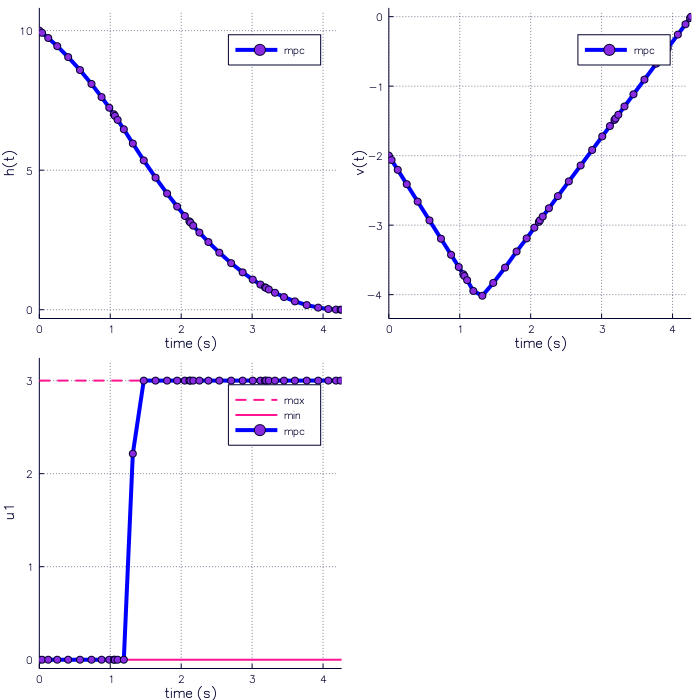

Moon Lander
using NLOptControl,JuMP,Parameters,PrettyPlots,Plots
main_dir=pwd();s=Settings();n=NLOpt();pgfplots();
const g = 1.62519; # m/s^2
function MoonLander{T<:Any}(mdl::JuMP.Model,n::NLOpt,r::Result,x::Array{T,2},u::Array{T,2}) # dynamic constraint equations
if n.integrationMethod==:tm; L=size(x)[1]; else L=size(x)[1]-1; end
dx = Array(Any,L,n.numStates)
dx[:,1] = @NLexpression(mdl, [j=1:L], x[j,2] );
dx[:,2] = @NLexpression(mdl, [j=1:L], u[j,1] - g);
return dx
end
define!(n,stateEquations=MoonLander,numStates=2,numControls=1,X0=[10.,-2],XF=[0.,0.],XL=[NaN,NaN],XU=[NaN,NaN],CL=[0.],CU=[3.])
configure!(n,Ni=4,Nck=[10,10,10,10];(:integrationMethod => :ps),(:integrationScheme => :lgrExplicit),(:finalTimeDV =>true))
#configure!(n,N=40;(:integrationMethod => :tm),(:integrationScheme => :bkwEuler),(:finalTimeDV =>true))
names = [:h,:v]; descriptions = ["h(t)","v(t)"]; stateNames!(n,names,descriptions);
mdl=defineSolver!(n;name=:IPOPT,max_iter=1000,feastol_abs=1.0e-3,infeastol=1.0e-8,opttol_abs=1.0e-3); r=OCPdef!(mdl,n,s);
obj=integrate!(mdl,n,r.u[:,1];C=1.0,(:variable=>:control),(:integrand=>:default))
@NLobjective(mdl, Min, obj); optimize!(mdl,n,r,s);
plotSettings(;(:mpc_lines =>[(4.0,:blue,:solid)]),(:size=>(700,700)));
allPlots(n,r,1);
r.dfs_opt